Week 16 - System Integration#
Week 16 focused on system integration, bringing together all the skills learned throughout Fab Academy into a cohesive final project.
The aim was to integrate electronics, programming, fabrication, and design into a functional system.
This week marks the beginning of intensive final project development.
Assignment#
- Integrate the skills and processes learned throughout Fab Academy
- Work on final project development
- Focus on system-level thinking and integration
Key Focus Areas#
- Electronics integration - connecting all boards and sensors
- Software integration - ensuring all code works together
- Mechanical integration - fitting all physical parts
- User interface - creating intuitive interactions
What I Learned#
This week I learned that building a big project means putting a lot of small pieces together so they all work as one system. I had to think about the electronics, the programming, and the physical design all at the same time, instead of working on just one part. I also learned that picking the right microcontroller matters a lot, since it needs to have enough pins and features for everything I want to do, without costing too much. Planning ahead with flow diagrams and sketches before building anything also helped me figure out problems early, before they became big issues.
Software Used#
- All previously used software as needed
- Integration testing tools
- Browser + Git for documentation
Weekly Schedule#
| Day | What I Did |
|---|---|
| WED | System integration session |
| THU | Drew out flow diagrams and planned how the tool tracking system would work |
| FRI | Looked for design ideas and sketched out what the cabinet should look like |
| SAT | Designed the enclosure, handle, and solenoid latch parts |
| SUN | Worked out where the electronics go and planned the programming logic |
| MON | Picked the microcontroller and thought about repair and lifecycle |
| TUE | Regional review |
Flow Diagrams#
1. ESP32 Initial Setup Flow Diagram#
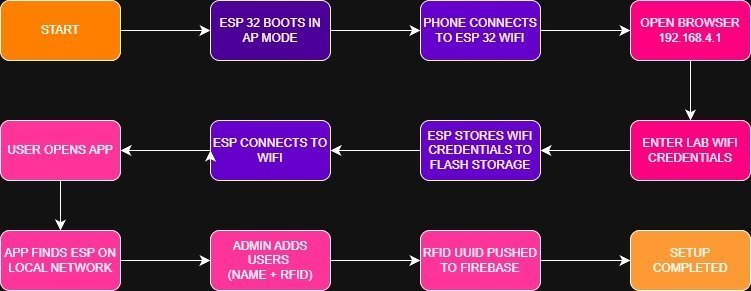
2. Initial Tool Tracking System Idea#
At first, I was planning to use a matrix of switches for the different tools. But after a while, I realized it would be a pain to wire all the limit switches into a row-and-column matrix just to save GPIO pins. So I came up with a better idea: give each switch its own tiny microcontroller, kind of like how NeoPixel LEDs work. I’d use a CH32V003J4M6 microcontroller for each switch and use its RX and TX pins to daisy-chain all the switches together. Each switch passes its data along the chain to the XIAO, so the XIAO knows exactly which switch is pressed and which isn’t. The best part is that this whole setup only needs 4 wires total: VSS, GND, DIN, and DOUT.
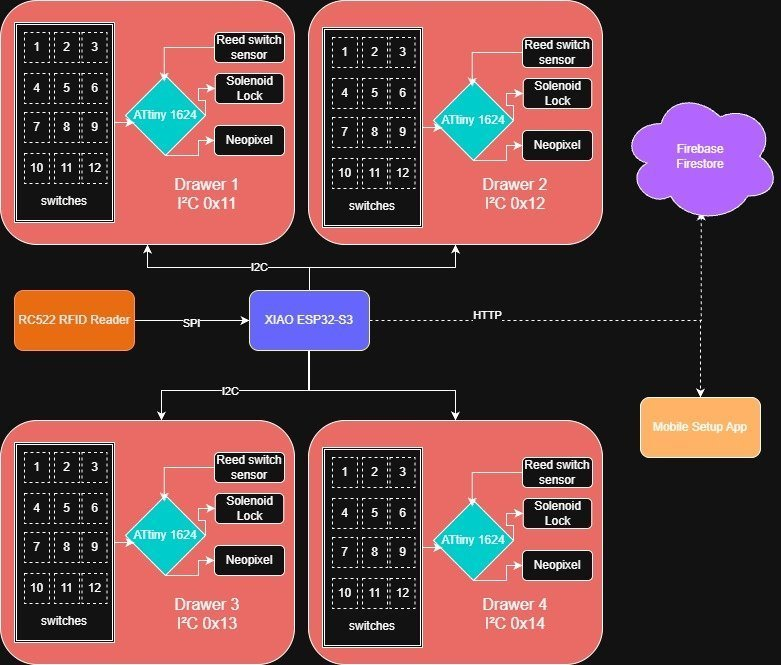
3. Final Tool Tracking System Idea#
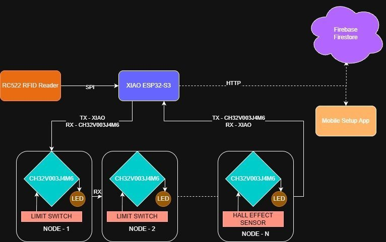
4. User Flow Diagram#
The diagram below shows how an everyday user would interact with the tool cabinet on a day-to-day basis.
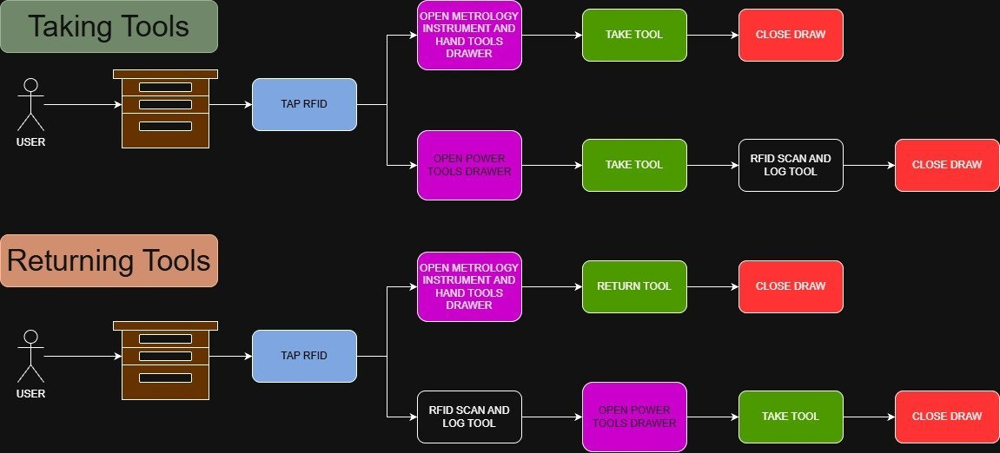
Final Project Development Plan#
This is lowkey a pretty big project, so I’m breaking it down:
Bill of Materials#
Design Exploration and Intend#
While designing the outer structure, I wanted my tool box to blend into the background, like a “sleeper build.” It should look like an ordinary cabinet and not look smart or high-tech from the outside. That was one of my main requirements. I also didn’t want it to look like a traditional tool cabinet, with lots of metal parts and an industrial look, like something you’d see in a mechanic’s shop.
So I looked for inspiration from kitchen cabinets and furniture instead. I ended up going down a rabbit hole watching YouTubers who build furniture make kitchen cabinets.
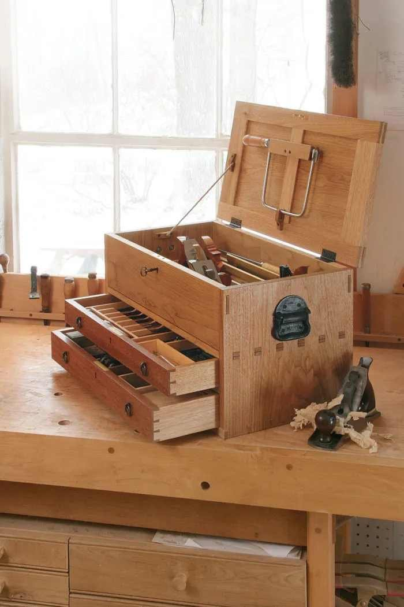
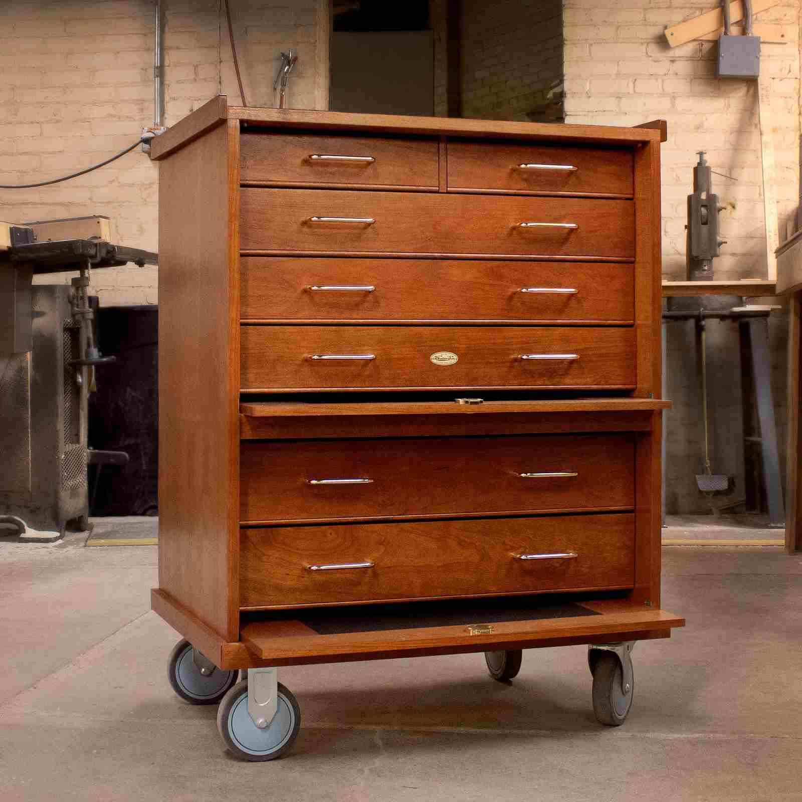
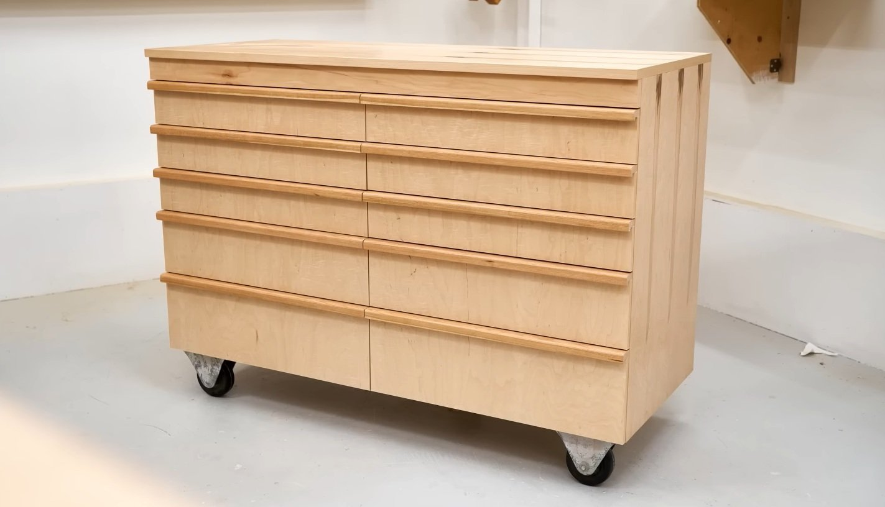
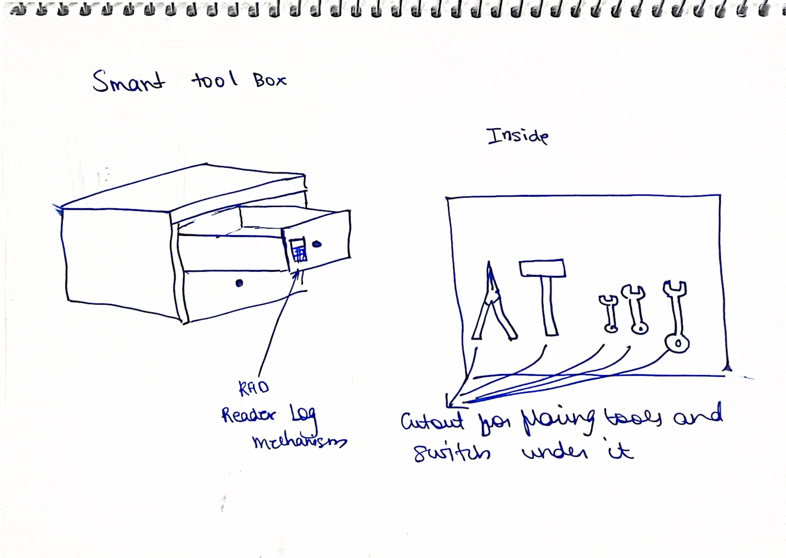
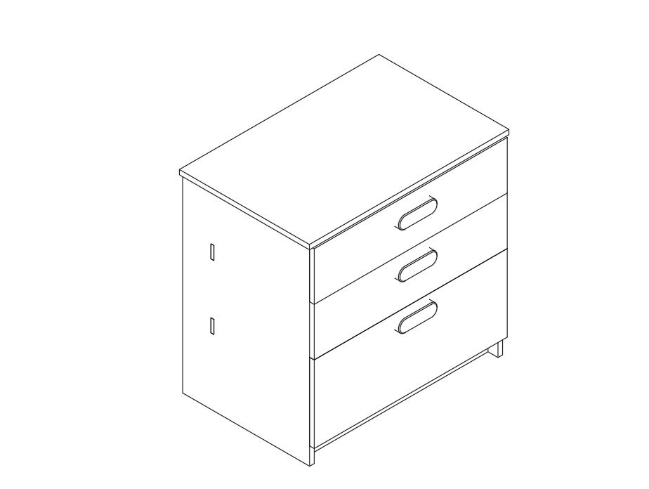
Exploded Sketch of the cabinet#
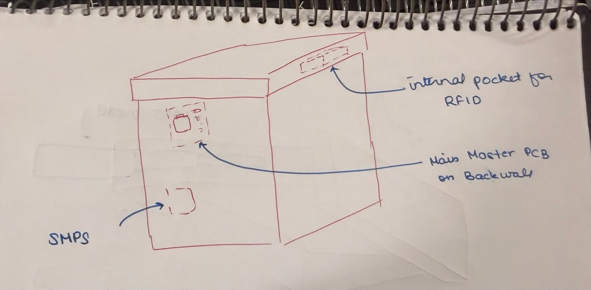
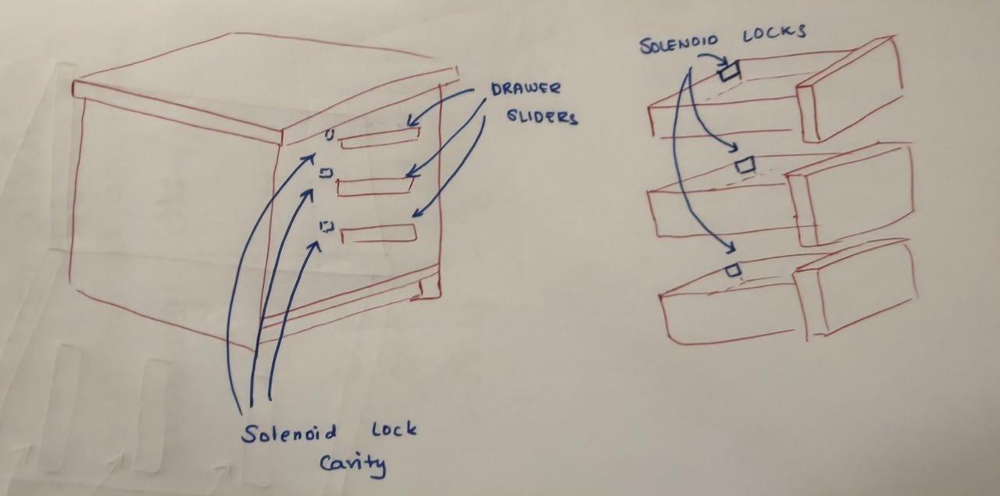
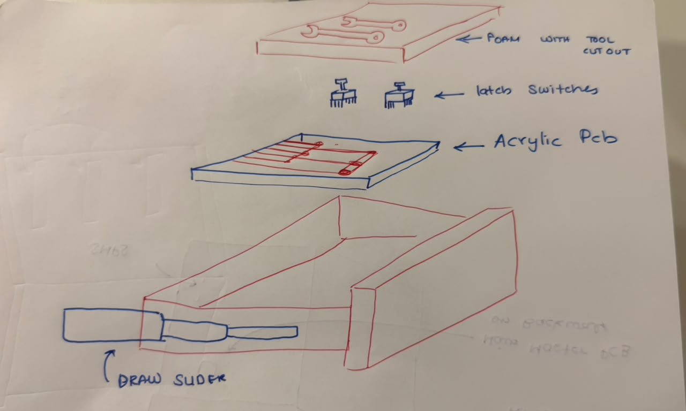
In the end, I decided to make something that looks like a kitchen cabinet, but for tools. I wanted to build it out of wood to give it a homier feel and make it look less industrial, more like a piece of furniture you’d find in a home workshop or garage rather than a commercial tool cabinet.CMF (Color, Material, Finish)#
For the actual material, my plan is to build the main structure out of plain plywood since it’s strong, cheap, and easy to cut. But plain plywood looks pretty rough on its own, so I’m planning to glue a thin layer of veneer on top of it. The veneer is what will actually give the cabinet that nice wooden look I want.
Once the veneer is on, I’ll sand everything down with 120 grit sandpaper to get a smooth, even surface. After that, I’m planning to finish it off with walnut oil or teak oil. Both of these oils soak into the wood, bring out the grain, and give it a warm, natural look while also protecting it a bit. That should help the cabinet look like a real piece of furniture instead of a plain wooden box.
Packaging and Assembly#
enclosure design#
the enclsoure have been designesso hat it can be cnc routed using the shopbot out of the 18mm sheets of ply wood,the enclosure havenbeen designed with pressfit joints and finger joints so that it can be built without the use of fasteenrs or glue
handle design#
the handle have been deisgned to be 3d printed wthcaptve nuts within so thatit can be screwed onto the cabinaet face
insert handle image here
solenoid latch design#
the ltches have ben designedd so tht they can be 3d printed and screwed using drywall screws into the cabinet face, the solenoid will be mounted on the inside of the cabinet and will be used to lock and unlock the latch
placement and mounting of electronic components#
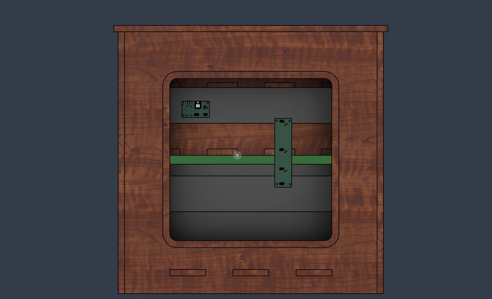
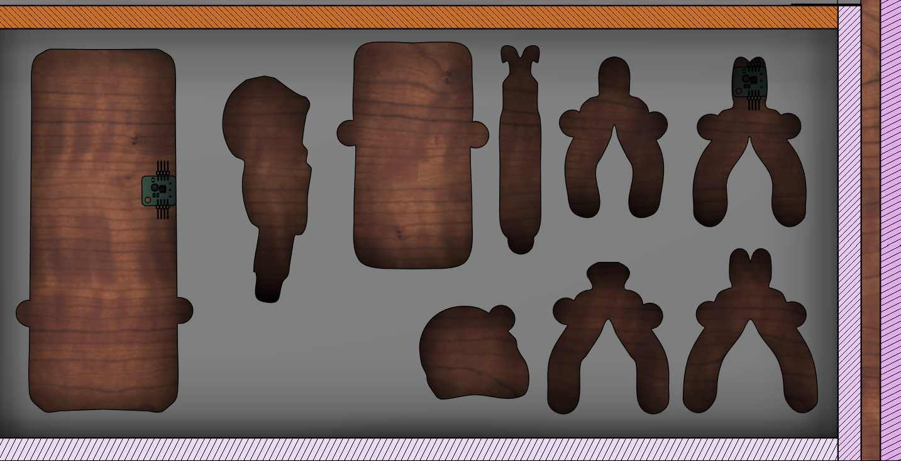
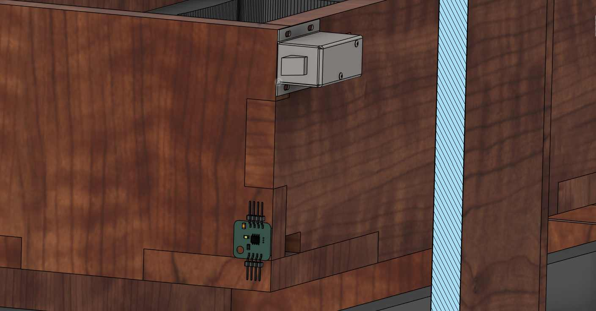
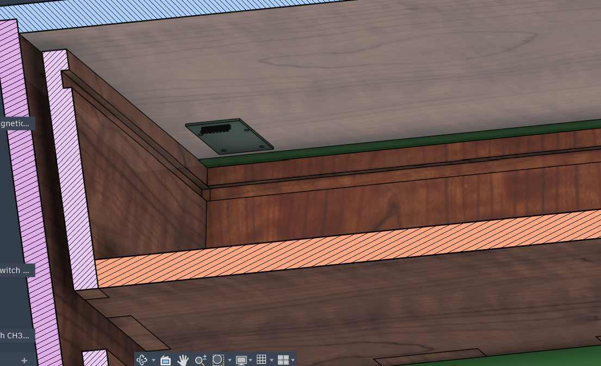
all thee electronics boards would e mountined by using drywall screws to screw thn to the plwood on op of which they have been placed
Programming#
Getting Ready: Before anyone uses it, the instructor sets up each student’s RFID tag (like a key card) in the app and picks which drawers they’re allowed to open. This info gets sent to the box over Wi-Fi, and all the drawers stay locked.
Waiting: The box just sits there with its lights doing a rainbow pattern. The whole time, it’s quietly checking all the tool slots and drawers, and waiting for someone to scan a tag.
Scan: A student taps their tag on the reader. The box reads the tag’s code.
Check: The box looks at its list to see if that tag is allowed in.
Decide:
- If the tag is allowed → the right drawer(s) unlock.
- If the tag is not allowed → the lights flash red to show “no access,” and this gets recorded.
- If no one has been set up yet → every drawer unlocks, so nobody gets locked out by accident.
Unlock: The drawer’s lock pops open, and its lights turn green to show “you’re good to go.”
Take or Put Back a Tool: The student opens the drawer and grabs (or returns) a tool. Each spot in the drawer has a sensor that notices if a tool is missing.
Show & Tell: If a tool is missing, that spot’s lights blink red so people know it’s out. The box also sends this info to the app.
Lock Up Again: After 5 seconds, the drawer locks itself again automatically, even if it’s still open.
Back to Waiting: The rainbow lights come back, and the box waits for the next student to scan a tag.
History: Everything that happens (scans, unlocks, denied tags, tools taken or returned, drawers opening and closing) gets saved so the instructor can check it later in the app.
Microcontroller Selection#
Why I Picked the XIAO ESP32-C6
My biggest worry was money. Out of all the XIAO boards, the ESP32-C6 was the cheapest one that still has Wi-Fi. I needed Wi-Fi because my project sends info to Firebase, so any board without Wi-Fi was out right away. That’s why I didn’t use the Raspberry Pi Pico 2 (it has no Wi-Fi) or the other XIAO boards, since they either cost more or didn’t have Wi-Fi.
Pins were another big reason. The ESP32-C6 has just the right number of pins for what I need, and I use almost all of them:
- 5 pins for SPI, to hook up the RFID reader
- 3 pins for the solenoid lock
- 2 pins (RX and TX) so the boxes can talk to each other
- 1 pin for the NeoPixel light
This means I’m using almost every pin on the board, nothing is wasted. I don’t need a bigger, pricier board with extra pins I’d never use.
So in short: I picked the XIAO ESP32-C6 because it was the cheapest XIAO board with Wi-Fi (which I needed for Firebase), and it has exactly the right number of pins for the RFID reader, solenoid, box-to-box communication, and the NeoPixel light, with almost nothing left over.
Repairability and Lifecycle Considerations#
The back panel of the tool cabinet can be taken off with just 4 drywall screws. This makes it easy to get to the electronics and wiring for repairs. Using standard parts and connectors also makes it simple to swap things out if something breaks.